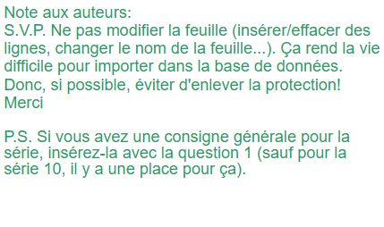
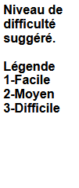

| Saison #24 - Deuxième série de Questionnaires | |||
| Numéro de Questionnaire | 15 | ||
| Date de création : | Décembre 2025 - février 2026 | ||
| Auteur(s) : | Pierre Parent, Mark Switzer | ||
| Équipe de(s) l’auteur(s) : | Érudits en Gerbe | ||
| Date des parties : | 19-févr.-26 | ||
| Partie 1 | Génies de la traduction vs Méthos Précieux | ||
| Partie 2 | Herbizarres vs 12e meilleurs | ||
| Série 1 | Langue | ||
| Individuelle | |||
| Rédiger 8 questions de niveaux faciles et constants. | |||
| Équipe A | |||
| 1 | 1 | Quel est le genre respectif des mots HÉMISPHÈRE, URUBU et OXYGÈNE ? | Masculin, masculin et masculin |
| 1 | 2 | Anagramme : PLURIEL est l'anagramme de quel mot qui désigne une personne qui profane des sépultures, entre autres. | PILLEUR (porter attention à la réponse ; refuser PILLARD, bien sûr) |
| 1 | 3 | Quel mot de 6 lettres, qui commence par un S, désigne une épice, extraite des stigmates de la fleur du crocus sativus, est aussi appelée « or rouge » en raison de sa couleur et de son coût élevé ? | Safran |
| 1 | 4 | Mot de 5 lettres qui se termine par un Z. Commence par un A et signifie suffisamment ou ça suffit. | ASSEZ |
| Équipe B | |||
| 1 | 5 | Anagramme : EXTERNAT (épeler) est l'anagramme de quel mot, qui représente la 3e personne du pluriel du passé simple d'un verbe qui signifie imposer des taxes ? | TAXÈRENT |
| 1 | 6 | Quel mot de 6 lettres, qui commence par un T, désigne un champignon très recherché et très coûteux ou une confiserie consistant en une ganache enrobée de cacao ? | Truffe |
| 1 | 7 | Mot de 5 lettres qui se termine par un Z. Commence par un H et représente l'unité de fréquence équivalant à un cycle par seconde. | HERTZ |
| 1 | 8 | Quel est le genre respectif des mots ATMOSPHÈRE, ONCE (l'animal ou l'unité de poids) et ORTHÈSE ? | Féminin, féminin et féminin |
| Série 2 | Géographie | ||
| Collective | |||
| Les 5 questions doivent couvrir l'ensemble du thème. Varier les sujets, formulations, longueurs, difficultés, etc. | |||
| 1 à 3 | 1 | Quelle est la capitale du Cambodge ? | Phnom Penh |
| 1 à 3 | 2 | Quelles deux villes, dont le nom commence par un S comme Suisse, l’une ontarienne, l’autre américaine, sont séparées par une rivière et un pont et sont des entités administratives distinctes mais portant le même nom ? | Sault-Ste-Marie |
| 1 à 3 | 3 | Dans quel pays se trouve les volcans suivants : Mont Adagdak, Mont Hood et Mauna Kea ? | États-Unis |
| 1 à 3 | 4 | Dans quel région ou département français se trouve la ville considérée comme la capitale mondiale du parfum, la ville de Grasse ? | Provence (Provence-Alpes-Côte d'Azur, PACA, Alpes Maritimes) |
| 1 à 3 | 5 | Quel est le plus grand pays qui ne possède ni rivières, ni fleuves ? | Arabie Saoudite |
| Série 3 | Cinéma et télévision | ||
| Collective | |||
| Les 5 questions doivent couvrir l'ensemble des thèmes. Varier les sujets, formulations, longueurs, difficultés, etc. | |||
| 1 à 3 | 1 | Dans quel hôpital se déroule la série télévisée STAT ? | Saint-Vincent |
| 1 à 3 | 2 | Par quels frères a été réalisé le film Non, ce pays n'est pas pour le vieil homme (No Country for Old Men) ? | Les frères Joel et Ethan Coen |
| 1 à 3 | 3 | L'action de quelle série, diffusée sur HBO de 2011 à 2019, se déroule sur le continent de Westeros ? | Le Trône de fer (Game of Trones) |
| 1 à 3 | 4 | Quel site humoristique québécois, créé en 2006 par le publicitaire Michel Beaudet, et qui a été adapté à la télé, s'est fait connaître entre autres par le Willy Waller 2006 (dire Two thousand and six) et oncle Tom ? | Les Têtes à claques |
| 1 à 3 | 5 | Quel film d'animation 3D de 2000, qui a influencé la création des Têtes à claques, raconte l'histoire de la poule Ginger qui essaie à plusieurs reprises de s'évader du poulailler géré par les Tweedy ? | Poulets en fuite (Chicken Run) |
| Série 4 | Histoire et société | ||
| Collective | |||
| Au moins 2 questions dans chacun des thèmes. | |||
| 1 à 3 | 1 | Dans quelle ville a eu lieu l’événement survenu le dimanche 30 janvier 1972 qui a fait 13 morts et qui a été surnommé Bloody Sunday ? | Londonderry |
| 1 à 3 | 2 | Dans quelle ville le drapeau franco-ontarien a-t-il été dévoilé en 1975 ? | Sudbury |
| 1 à 3 | 3 | Après la Joconde au Louvre, quelle pierre précieuse serait le deuxième objet d'art le plus visité dans le monde, pierre que l'on peut voir au Smithsonian Institute à Washington ? | Le diamant Hope |
| 1 à 3 | 4 | Quel mot débutant par S comme Suisse désigne la préparation mousseuse d’origine italienne, faite à base de jaunes d’œufs et d’alcool battus pendant la cuisson, qui est utilisée pour des desserts ou des sauces ? | Sabayon |
| 1 à 3 | 5 | Quelle fleur appelée « Sakura » au Japon est l'emblème floral du pays ? | Fleur de cerisier |
| Série 5 | Une année, décennie ou siècle | ||
| Contrôle | |||
| Choisir une année (décennie ou siècle pour les époques plus anciennes) et poser 5 questions relatives à cette période. Les questions doivent être diversifiées, sports, politiques, arts, etc. La première question vaut 5 points. | 1898 | ||
| 1 ou 2 | 1 | De quel territoire Dawson City a-t-elle été désignée la capitale lors de sa formation en 1898, avant que Whitehorse ne le devienne en 1953 ? | Yukon |
| 2 ou 3 | 2 | La bataille de la Baie de Manille était la première de quelle guerre ? | Guerre hispano-américaine (accepter désastre de 1898) |
| 2 ou 3 | 3 | Quelle femme légendaire de l'Ouest américain a écrit une lettre au président McKinley pour lui offrir les services de 50 tireuses d'élite en cas de guerre avec l'Espagne ? Elle était elle-même reconnue pour être tireuse d'élite. | Annie Oakley (accepter Annie du Far-West) |
| 2 ou 3 | 4 | Quel journaliste, qui sera plus tard Président du conseil des ministres de France et membre de l'Académie française, surnommé Le Tigre, a joué un rôle dans la réhabilitation de Dreyfus en 1898 avec ses articles ? | Georges (Benjamin) Clémenceau |
| 2 ou 3 | 5 | Nommez trois des cinq arrondissements qui ont fusionné pour former la ville de New York le 1er janvier. | 3 parmi Bronx, Brooklyn, Manhattan, Queens et Staten Island |
| Série 6 | #RÉF ! | ||
| Les 4 V | Frères dans la LNH | ||
| Une bonne réponse élimine le joueur pour la série. Si tous les joueurs d'une équipe ont une bonne réponse, la série se poursuit en collectives pour 5 points. | |||
| 1 | 1 | Originaires de Viking en Alberta, quel est le nom de famille des frères Darryl, Brent, Brian, Duane, Rich et Ron ? | Sutter |
| 1 | 2 | Ayant évolué ensemble durant 8 ans avec Chicago, quel est le prénom du frère de Dennis Hull qui s'adonne également à être le père de Brett ? | Bobby (Robert Marvin) |
| 1 | 3 | Quel est le prénom du frère de Marty et du fils de Gordie Howe, avec lesquels il a joué pour les Aeros de Houston puis les Whalers de Hartford ? | Mark |
| 1 | 4 | En 2001-2002, quel Valeri a joué avec son frère Pavel pour les Panthers de la Floride ? | Bure |
| 1 | 5 | Même s'il n'a joué qu'une seule partie dans la LNH, il est plus connu que son frère qui y a évolué une quinzaine d'années, Dick Cherry. | Don Cherry |
| 1 | 6 | Ces deux jumeaux ont chacun été les meilleurs compteurs de la ligue, en 2010 pour Henrik, puis en 2011 pour Daniel, avec Vancouver. | Sedin |
| 1 | 7 | Nordiques de Québec, Anton, Marian et Peter. | Les Stastny |
| 1 | 8 | 19 coupes Stanley à eux deux. Maurice et Henri. Canadiens de Montréal. Pas besoin d'en dire davantage … | Richard |
| Série 7 | Arts et littérature | ||
| Collective | |||
| Au moins 2 questions dans chacun des thèmes. | |||
| 1 à 3 | 1 | Quel auteur a créé le personnage de Julien Sorel, héros du roman Le Rouge et le Noir ? | Stendhal (Henri Beyle) |
| 1 à 3 | 2 | Quel est le titre du roman de Harper Lee qui a remporté le prix Pulitzer 1961 et dont la narratrice est surnommée Scout ? | To Kill a Mockingbird (Ne tirez pas sur l’oiseau moqueur) |
| 1 à 3 | 3 | Quel peintre québécois, né à Ste-Rose, Laval, en 1888, est reconnu pour ses paysages aux arbres dits troués ? | Marc-Aurèle Fortin |
| 1 à 3 | 4 | Quel est le titre du premier roman de Kim Thúy, paru en 2009 ? | Ru |
| 1 à 3 | 5 | Quel nom porte la sculpture monumentale de Rodin d’où des œuvres comme Le Baiser et Le Penseur ont été tirées ? | La Porte de l'enfer |
| Série 8 | Sports et loisirs | ||
| Collective | |||
| Au moins 2 questions dans chacun des thèmes. | |||
| 1 à 3 | 1 | Quel joueur actif de la LNH, qui porte le numéro 27 avec les Oilers d'Edmonton, est le joueur d'origine allemande ayant accumulé le plus de points dans l'histoire de la ligue ? | Leon Draisaitl |
| 1 à 3 | 2 | Dans un duel appelé le Match du siècle en Islande en 1972, Bobby Fisher a battu quel joueur d’échecs pour devenir champion du monde ? | Boris Spassky |
| 1 à 3 | 3 | Quelle est l'université ontarienne qui a disputé le plus grand nombre de parties de finale de la coupe Vanier, soit 15, une de plus que le Rouge et Or de l'Université Laval ; elle est située à London ? | Université Western Ontario |
| 1 à 3 | 4 | Quelle équipe de la LNH a gagné quatre coupes Stanley consécutives, de 1980 à 1983 ? | Islanders de New York |
| 1 à 3 | 5 | Quelle joueuse a remporté le tournoi de tennis féminin en simple du Canada en 2025 à Montréal ? | Victoria Mboko |
| Série 9 | #RÉF ! | ||
| Question à indice | |||
| Dès le 1er indice, il ne doit pas y avoir plusieurs réponses possibles. Le premier indice devrait être très difficile! | |||
| 3 | 1 | Cinéaste né en 1946 au Montana, son premier court-métrage, en 1967, s'intitule Six Figures Getting Sick. | |
| 2 | 2 | Il connaît le succès dès son premier long métrage, Eraserhead. | |
| 1 | 3 | Gagnant de plusieurs Oscars, dont celui de 2020 pour l'ensemble de son œuvre, il décède en 2025, laisant derrière lui les films ou séries Elephant Man, le Dune de 1984, Mulholland Drive et Twin Peaks. | David Lynch |
| Série 10 | #RÉF ! | ||
| Vis-à-vis | Œuvres artistiques et littéraires | ||
| Il est normal que ces 4 questions soient parmi les plus faciles du questionnaire | |||
| 1 | 1 | Le romancier Bernard Werber a acquis sa notoriété grâce à sa trilogie de fiction portant sur quel insecte laborieux, antagoniste de la cigale chez Lafontaine ? | La fourmi (ou les fourmis) |
| 1 | 2 | À quel peintre doit-on les œuvres Les Demoiselles d'Avignon ; Portrait de Dora Maar ; et Guernica, toutes créées lors de sa période cubiste ? | Pablo Picasso |
| 1 | 3 | De quel héros L'Aiguille creuse ; 813 ; et ses deux rencontres avec Herlock Sholmes sont-elles des aventures créées par Maurice Leblanc ? | Arsène Lupin |
| 1 | 4 | Dans la cour de quel musée prestigieux peut-on trouver la pyramide érigée par l'architecte Ieoh Ming Pei, inaugurée en 1988 par Mitterrand ? | Le Louvre |
| Série 11 | Musique | ||
| Collective | |||
| Les 5 questions doivent couvrir l'ensemble du thème. Varier les sujets, formulations, longueurs, difficultés, etc. | |||
| 1 à 3 | 1 | En 2024, quel artiste a succédé à Dan Bigras pour animer le Show du Refuge ? | Louis-Jean Cormier |
| 1 à 3 | 2 | Quel est le nom du groupe que Paul McCartney a formé en 1971 après la séparation des Beatles ? | Paul McCartney and the Wings (accepter les Wings) |
| 1 à 3 | 3 | Ayant inspiré une pièce de théâtre à Pouchkine, un opéra à Moussorgski et une musique de scène à Prokofiev, qui est ce tsar décédé en 1605 prénommé Boris ? | Boris Goudenov |
| 1 à 3 | 4 | Sous quel nom George Alan O'Dowd était-il connu avec le groupe Culture Club ? | Boy George |
| 1 à 3 | 5 | Quel groupe trad originaire de Ripon dans la Petite-Nation a mené une carrière internationale très fructueuse en 2025 ? | Le Diable à cinq |
| Série 12 | Sciences | ||
| Collective | |||
| Les 5 questions doivent couvrir l'ensemble du thème. Varier les sujets, formulations, longueurs, difficultés, etc. | |||
| 1 à 3 | 1 | Ambroise Paré est considéré comme le père de quelle spécialité médicale ? | La chirurgie |
| 1 à 3 | 2 | Quel métal autre que le cuivre entre dans la composition du laiton ? | Le zinc |
| 1 à 3 | 3 | Triton et Néréide sont des lunes de quelle planète ? | Neptune |
| 1 à 3 | 4 | Incarnée au cinéma par Sigourney Weaver dans le film Gorilles dans la brume, quelle primatologue américaine a été assassinée en 1985 ? | Dian Fossey |
| 1 à 3 | 5 | Combien vaut 6, à la puissance 5 ? | 7776 |
| Série 13 | Libre | ||
| Choix d'associations | Présidents de l'Europe de l'Est au nom typique ou porte-parole, publicité automobile francophone | ||
| Deux séries d'associations de 4 éléments. L'inconnue correctement identifiée et bien associée vaut 20 points, les autres bonnes associations valent 10 points chacune. | |||
| Sous-thème 1 (doit être précis et non relié au sous-thème 2) | |||
| Associer le président actuel au nom typique à son pays de l'Europe de l'Est | |||
| 1 à 3 | 1 | Vahagn Katchaturyan | A |
| 1 à 3 | 2 | Mikheil Kavelashvili | C |
| 1 à 3 | 3 | Alexandre Loukachenko | D - Biélorussie |
| 1 à 3 | 4 | Zoran Milanovic | B |
| A | Arménie | ||
| B | Croatie | ||
| C | Géorgie | ||
| D | Inconnu | ||
| Sous-thème 2 (doit être précis et non relié au sous-thème 1) | |||
| Associer le porte-parole publicitaire francophone au constructeur | |||
| 1 à 3 | 1 | Mélissa Désormeaux-Poulin | A |
| 1 à 3 | 2 | Pierre-Luc Funk | C |
| 1 à 3 | 3 | Élise Guilbault (voix seulement) | D - Genesis |
| 1 à 3 | 4 | Karine Vanasse | B |
| A | Kia | ||
| B | Nissan | ||
| C | Volkswagen | ||
| D | Inconnu | ||
| Série 14 | Divers | ||
| Questions Éclair | |||
| Viser des questions courtes couvrant un maximum de thèmes différents. | |||
| 1 ou 2 | 1 | Qui était président des États-Unis lors des bombardements atomiques de Hiroshima et Nagasaki ? | Harry Truman |
| 1 ou 2 | 2 | Pour obtenir quelle apellation de whisky américain, cet alcool doit-il contenir au moins 51 % de maïs ? | Bourbon |
| 1 ou 2 | 3 | Combien de points au total peut-on compter sur une paire de dés ? | 42 |
| 1 ou 2 | 4 | Depuis décembre 2023, quel est le nom complet de la LHJMQ ? | Ligue de hockey junior Maritimes Québec |
| 1 ou 2 | 5 | Nouméa est le chef-lieu de quel territoire français d’outre-mer ? | Nouvelle-Calédonie |
| 1 ou 2 | 6 | Quel est le nom de la famille souveraine de Monaco ? | Grimaldi |
| 1 ou 2 | 7 | Quel est le plus grand lac entièrement situé au Canada ? | Grand lac de l'Ours |
| 1 ou 2 | 8 | En quelle année le Traité de Paris scellant la fin de la Seconde guerre mondiale a-t-il été signé ? | 1947 |
| 1 ou 2 | 9 | Sous quel autre nom la maladie neurodégénérative de Charcot est-elle beaucoup mieux connue en Amérique ? | Maladie de Lou Gehrig (Sclérose latérale amyotrophique, SLA) |
| 1 ou 2 | 10 | Dans quelle chanson des Cowboys fringants peut-on entendre les paroles suivantes : « Et ces hivers enneigés, À construire des igloos Et rentrer les pieds g'lés, Juste à temps pour Passe-Partout » ? | Les Étoiles filantes |
| P | |||
| Série 15 | Actualité | ||
| Question prime | |||
| Poser une question demandant une réponse simple, pour éviter les ambiguïtés. | |||
| 1 à 3 | 1 | En novembre 2023, Édith Dumont a été nommée à quel poste prestigieux, devenant ainsi la première Franco-ontarienne à exercer cette fonction ? | lieutenante-gouverneure de l’Ontario |

